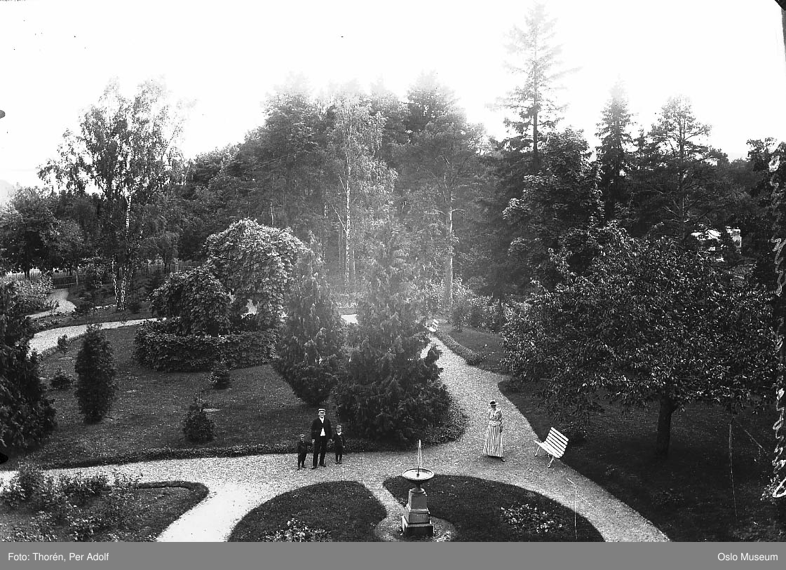
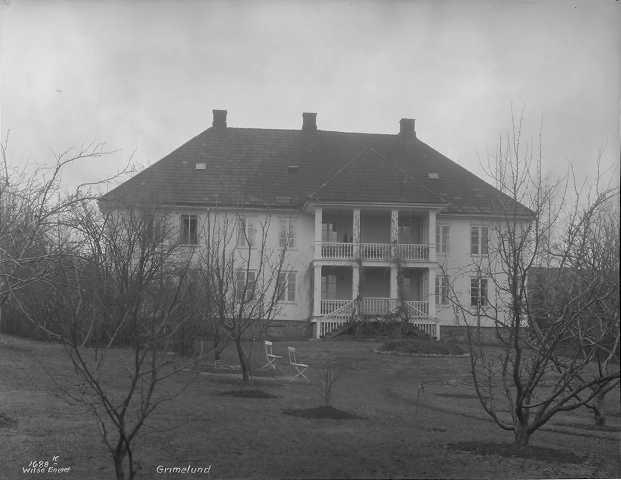
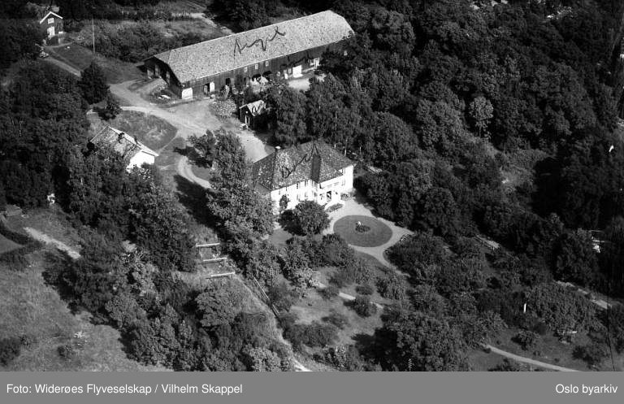

En 700 år gammel gård midt i byen
700-річна садиба посеред міста
A 700-year-old farm in the middle of the city
På Grimelundshaugen 12 står en gård som har vært her i minst 700 år – kanskje siden vikingtiden. Låve, stabbur, smie, sidebygning og det hvite hovedhuset deler fortsatt samme tun, med et eldgammelt asketre som midtpunkt.

I dag er det lett å gå forbi og bare se et boligstrøk. Men en gang strakte Grimelunds marker seg som et langt belte fra Smestad i sør og helt opp mot Nordmarka og Vettakollen. Mellom Ris gård i øst, Holmen gård i vest og Smestad gård i sør lå Grimelund som en av Vestre Akers største eiendommer. I folketellingen fra 1865 var hele 34 personer registrert som bosatt og i arbeid på gården. På Grimelunds grunn ble Sophies Minde reist i Skådalen i 1902, og Vettakollen turisthotell sto også her – i bygningen som i dag huser Oslo Montessoriskole.
Hva betyr navnet?
Ingen vet sikkert hvor navnet kommer fra. Kanskje fra kvinnenavnet Grima, kjent fra Island helt tilbake til landnåmstiden. Kanskje fra Grimelundbekken eller Skådalsbekken som renner forbi. En tredje mulighet er at norrønt gríma – som kan bety «grime», «maske» eller «hjelm», men også «stripe» eller «merke» – ga navn til en liten løvskog der noen hadde hogd grensemerker inn i trærne.
Eierne gjennom 700 år
Oslo domkirke eide gården sent på 1300-tallet. Så overtok Nonneseter kloster, og senere Hovedøen kloster. I 1617 tok kronen over, før Grimelund gikk videre til private hender: borgermester Nils Lauritssønn, zahlkasserer Christian Petersen, og Hans Hansen Mørk – som senere tok navnet Grimelund. I 1847 kjøpte en av sønnene på Huseby gård eiendommen, og familien Husebye bor der fortsatt.

Tunet
Selve tunet er godt bevart. Den avlange låven, det lille stabburet, smia, sidebygningen og det hvite hovedhuset står fortsatt samlet. Inngangen til hovedhuset er i Louis-seize-stil; resten i tidlig empire. I midten av gårdsplassen står tuntreet – et stort, gammelt asketre som har sett alle eierne komme og gå.

Hoppbakke og hemmelige møter
Vest for gården lå Grimelundsbakken, en av de tidligste hoppbakkene i Oslo og Aker. Allerede i 1865 ble det arrangert gutterenn her, og i 1881 viste skipionerene Mikkjel og Torjus Hemmestveit ferdighetene sine i bakken.
Sommeren 1941 fikk Grimelund en helt annen rolle. Da ble det holdt flere hemmelige møter på gården i en gruppe som senere ble kalt «Kretsen» – en del av motstandsarbeidet under andre verdenskrig. Det første møtet skulle se ut som et helt vanlig middagsselskap, og deltakerne kom med noen minutters mellomrom for ikke å vekke mistanke.

I dag drives Grimelund ikke lenger som gård. Men hver gang du går forbi det hvite hovedhuset og det gamle asketreet, står du på et tun som har vært i bruk siden middelalderen – og kanskje siden vikingtiden.
На Grimelundshaugen 12 стоїть садиба, яка існує тут щонайменше 700 років — можливо, ще з часів вікінгів. Стодола, комора, кузня, бічна будівля та білий головний будинок і досі стоять навколо одного подвір’я, у центрі якого — стародавній ясен.
Сьогодні легко пройти повз і побачити лише житловий квартал. Але колись угіддя Grimelund тяглися довгим поясом від Smestad на півдні аж до Nordmarka і Vettakollen. Між садибами Ris на сході, Holmen на заході та Smestad на півдні Grimelund була однією з найбільших ділянок Західного Акера. За переписом 1865 року на садибі мешкали й працювали аж 34 особи. На землях Grimelund у 1902 році в Skådalen звели Sophies Minde, а тут стояв і туристичний готель Vettakollen — у будівлі, де сьогодні розміщується Oslo Montessoriskole.
Що означає назва?
Достеменно невідомо, звідки походить ця назва. Можливо, від жіночого імені Grima, відомого в Ісландії ще з часів заселення острова. Можливо, від струмків Grimelundbekken чи Skådalsbekken, що протікають поряд. Є й третя версія: давньоскандинавське gríma — слово, що могло означати «недоуздок», «маску» або «шолом», а також «смугу» чи «знак» — дало ім’я невеликому листяному гаю, у деревах якого хтось вирізав межові позначки.
Власники впродовж 700 років
Наприкінці 1300-х років садиба належала Oslo domkirke. Згодом її перейняв монастир Nonneseter, а пізніше — монастир Hovedøen. У 1617 році її передали короні, після чого Grimelund перейшла в приватні руки: до бургомістра Nils Lauritssønn, головного скарбника Christian Petersen, а потім до Hans Hansen Mørk — який згодом узяв прізвище Grimelund. У 1847 році маєток купив один із синів садиби Huseby, і родина Husebye живе тут досі.
Подвір’я
Саме подвір’я добре збереглося. Довгаста стодола, невелика комора, кузня, бічна будівля та білий головний будинок і досі стоять разом. Вхід до головного будинку виконано в стилі Луї-сез; решта — у ранньому стилі ампір. У центрі двору росте дерево-символ садиби — великий старий ясен, що бачив, як приходили й відходили всі господарі.
Лижний трамплін і таємні зустрічі
На захід від садиби розташовувався Grimelundsbakken — один із найдавніших лижних трамплінів в Осло й Акері. Уже у 1865 році тут проводили хлоп’ячі змагання, а в 1881 році піонери лижного спорту Mikkjel і Torjus Hemmestveit показали тут свою майстерність.
Улітку 1941 року Grimelund отримала зовсім іншу роль. Тоді на садибі провели кілька таємних зустрічей групи, яку згодом назвали «Kretsen» («Коло») — частина руху Опору під час Другої світової війни. Перша зустріч мала виглядати як звичайна вечеря, а учасники приходили з різницею в кілька хвилин, щоб не викликати підозр.
Сьогодні Grimelund уже не функціонує як садиба. Але щоразу, коли ви проходите повз білий головний будинок і старий ясен, ви стоїте на подвір’ї, що використовується ще з часів Середньовіччя — а можливо, ще з часів вікінгів.
At Grimelundshaugen 12 stands a farm that has been here for at least 700 years – perhaps since the Viking Age. The barn, storehouse, smithy, side building and the white main house still share the same farmyard, with an ancient ash tree as its centrepiece.
Today it is easy to walk past and see only a residential area. But once Grimelund's fields stretched like a long belt from Smestad in the south all the way up towards Nordmarka and Vettakollen. Between Ris farm to the east, Holmen farm to the west and Smestad farm to the south, Grimelund lay as one of Vestre Aker's largest estates. In the 1865 census, as many as 34 people were registered as living and working on the farm. On Grimelund's land, Sophies Minde was built in Skådalen in 1902, and the Vettakollen tourist hotel also stood here – in the building that today houses Oslo Montessori School.
What does the name mean?
No one knows for certain where the name comes from. Perhaps from the woman's name Grima, known in Iceland right back to the settlement era. Perhaps from the Grimelund brook or the Skådal brook that run past. A third possibility is that the Old Norse gríma – which can mean “halter,” “mask” or “helmet,” but also “stripe” or “mark” – gave its name to a small deciduous wood where someone had carved boundary marks into the trees.
The owners over 700 years
Oslo Cathedral owned the farm in the late 1300s. Then Nonneseter convent took over, and later Hovedøen monastery. In 1617 the Crown took over, before Grimelund passed into private hands: mayor Nils Lauritssønn, treasurer Christian Petersen, and Hans Hansen Mørk – who later took the name Grimelund. In 1847 one of the sons at Huseby farm bought the property, and the Husebye family still lives there.
The farmyard
The farmyard itself is well preserved. The elongated barn, the small storehouse, the smithy, the side building and the white main house still stand together. The entrance to the main house is in Louis Seize style; the rest in early Empire style. In the middle of the yard stands the farmyard tree – a large, old ash that has seen all the owners come and go.
A ski jump and secret meetings
West of the farm lay Grimelundsbakken, one of the earliest ski jumps in Oslo and Aker. As early as 1865 boys' competitions were held here, and in 1881 the skiing pioneers Mikkjel and Torjus Hemmestveit showed off their skills on the hill.
In the summer of 1941, Grimelund took on a quite different role. Several secret meetings were then held at the farm by a group later called “the Circle” (Kretsen) – part of the resistance work during the Second World War. The first meeting was meant to look like an ordinary dinner party, and the participants arrived a few minutes apart so as not to arouse suspicion.
Today Grimelund is no longer run as a farm. But every time you walk past the white main house and the old ash tree, you stand in a farmyard that has been in use since the Middle Ages – and perhaps since the Viking Age.
Kilder
Her er du
Slik blir du med på jakten
Finn stolpene rundt om i Vestre Aker, skann QR-koden og les historien om hvert sted. Velg et kallenavn – så samler du poeng for hvert nye sted du besøker. Ingen innlogging, ingen app.
Se kart og kom i gang